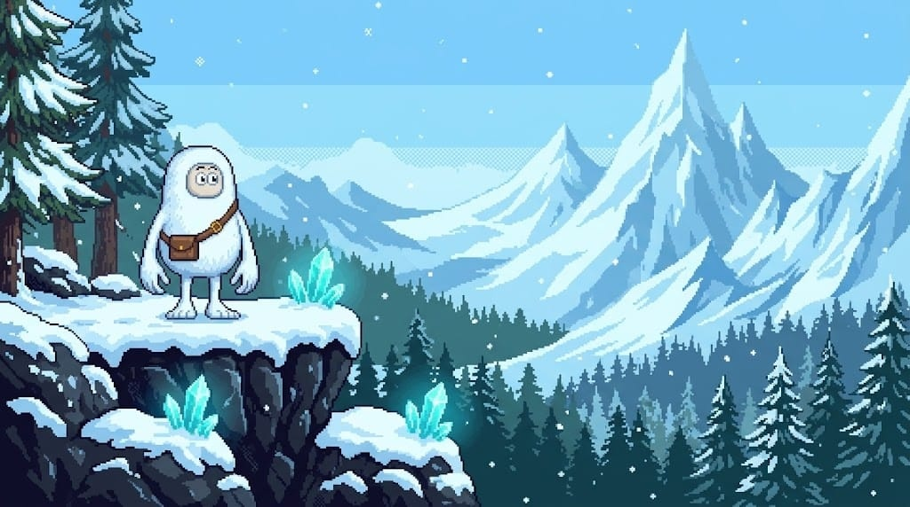
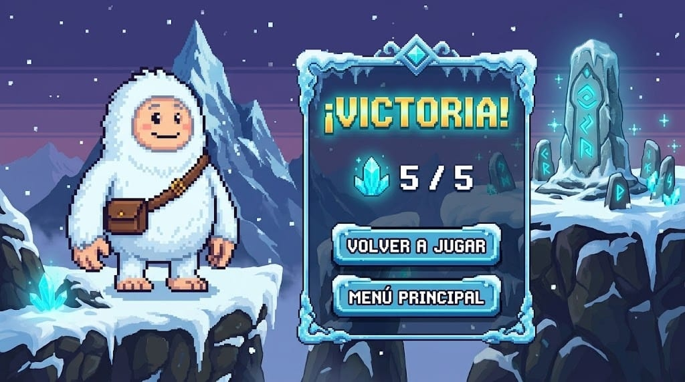
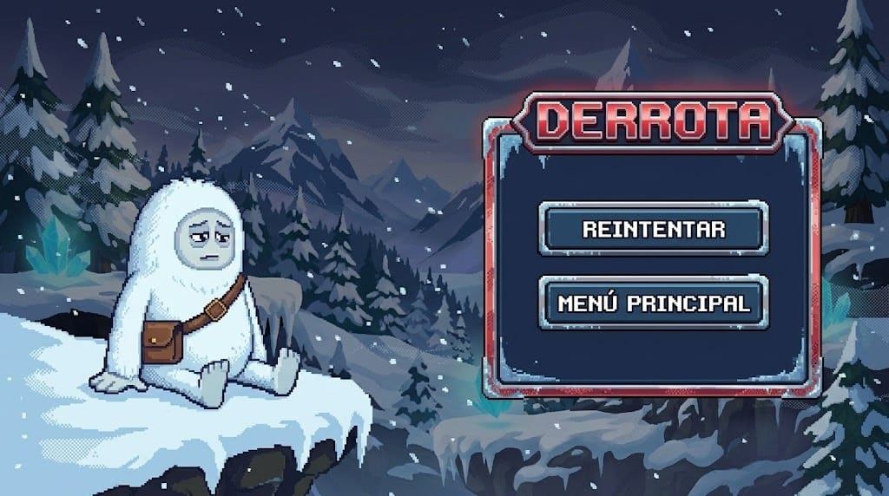

El Guardián de la Cumbre
Exploradores furtivos y drones térmicos han sustraído los cinco Cristales de Hielo Ancestrales. Recorre la cordillera nevada con el Yeti, neutraliza a los invasores con proyectiles de nieve y restituye el equilibrio climático en el Altar antes de que la tormenta llegue a cero.

Tráiler Oficial
Demostración de mecánicas, desplazamiento en plataformas y defensa de cristales
Jugar en el Navegador
Haz clic dentro del lienzo para activar el teclado
Condiciones de Partida y Entorno
Arte pixel art y flujo de resolución en el Altar de la Cumbre


01. Bosque Nevado
Zona inicial de exploración entre pinos nevados para dominar el salto y enfrentar a los primeros Exploradores Furtivos.
02. Cueva de Hielo
Tramo subterráneo con superficies de baja fricción, estalactitas y vigilancia aérea de Drones Térmicos.
03. Cumbre y Altar
Ascenso final sobre precipicios custodiados donde se depositan los cinco cristales para estabilizar el clima.